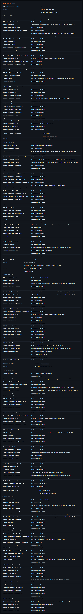

EN NINGÚN ARCHIVO
$ grep -r "Patient_Prescriptions_ListView" .
(sin resultados)
Y tus usuarios la abren todos los días.
14 clases → 54 pantallas
ninguna escrita en ningún archivo

Ahora sabes qué controladores carga cada una.